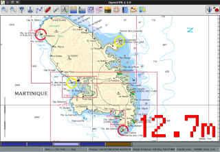

NMEA
Developer Manual - Online Nmea Tools
NMEA Input/Output/Multiplexing
Linux / MacOS
- kplex
-
Open source (GPLv3) software NMEA 0183 multiplexer for Linux, OS X and FreeBSD. Handles serial, pty, TCP/IPv4, TCP/IPv6, IPv4/IPv6 UDP multicast, IPv4 broadcast UDP and file inputs and outputs and performs optional sentence filtering, checksumming and data source prioritization/failover.
- MUPLEX
-
Open source under GPL, a Linux soft multiplexer that can mix different input flows of real or emulate serial (USB, bluetooth) NMEA datas and share it between multiple applications, creating virtual serial port and TCP/IP local loop or network, as VSPE for windows.
- Kave Oy Tools
-
NMEA Simulator can be used to simulate real devices on NMEA 0183 or NMEA 2000 bus also Open Skipper is Open Source code for integrating and displaying NMEA 0183, NMEA 2000 and AIS data from nautical instruments, GPS units and internet data sources. Official webpage for OpenSkipper. Test OpenSkipper by using NMEA-Simulator by following instructions on Testing OpenSkipper with NMEA-Simulator
Windows
AIS/NMEA Router and Decoder by Neal Arundale;; Routes AIS and other NMEA sentences between Serial, UDP, TCP, USB, Internet, Log files, TTY Display, and TTY Display Windows. Free Windows program. AIS Guides. Website with detailed AIS information. PDF showing operation with Opencpn. AIS Decoding webpage
- VSPE
-
Closed source freeware, windows only, Virtual Serial Port Emulator enables you to use data from one serialport (such as GPS or NMEA data) simultaneously with several programs. You can run PolarCom, NavMonPC, OpenCPN and other navigation programs at the same time without COMport conflict.
- NMEA MTK checksum calculator
NMEA virtual instrumentation
- NavMonPC
-
Closed source, windows only, but reportedly excellent gauges for wind instruments, GPS, AIS display, anchor alarm, etc.
- PolarCOM
-
Closed source, windows, linux, mac; visually appealing gauges for wind instruments, GPS, anchor alarm, etc.
- CapCode
-
Free software, Java-based navigation programme with sailing/regatta focus, supports wind instruments, polars, VMG etc.
Matrix Mariner GPS;; Free software, Windows and Linux, visually appealing GPS display, some features for GPS handling including live gps output to Google Earth. (Windows version includes VSPE kernel mode virtual serial driver).
- gpsview
-
Tool for analyse NMEA textual data, allows to load NMEA log files and view data in table, graph and track forms.
- OSD_Depth
-
Open source under GPL, a Linux echo-sounder repeater which uses the OSD technique (On Screen Display, always on top of all applications, using big digits) to display the water depth from NMEA sentences 'DBT' or 'DPT' in meters, feet, or fathoms.

VDRplayer Nmea Server for Testing
Contributed by Transmitter Dan, reported by R. Gleason
| This is based on Python2.7, a very old python version not recommended for use. TODO: Update for python 3. |
From the Command Line - Once everything is set up:
> cd C:/python27 > python VDRServer1.py Hakefjord-Sweden.txt 127.0.0.1 2947 .033 > python VDRServer1.py Hartmut-Netherlands.txt 127.0.0.1 2947 .033
Another way to start the Nmea server is to define all the paths to the
various files so you don’t have to change directory to C:\python\. This
example has the Nmea files under C:\Data-Dart\Nmea\
> c:\python27\python c:\python27\VDRServer1.py C:\Data-Dart\Nmea\Hakefjord-Sweden.txt 127.0.0.1 2947 .033 > c:\python27\python c:\python27\VDRServer1.py C:\Data-Dart\Nmea\Hartmut-Netherlands.txt 127.0.0.1 2947 .033
Download Attached Files
-
Nmea-Server-Python-Script-README.txt
-
VDRServer1.py
-
Hakefjord.txt
-
Hartmut-Netherlands.txt
These are available at https://github.com/transmitterdan/VDRplayer
Opencpn Beta File Thingie (Please login with username=rguser, password=rgpass) Download from the Nmea-Server folder. PLEASE Remove “.TXT” from VDRServer1.py.TXT
Install and Setup:
-
Download and install Python27 Python is a platform independent scripting language interpreter.
-
You can Download Python for Windows here: https://www.python.org/downloads/ “Download Python 2.7.10
-
Execute the python-2-7-10.msi file and install to c:\python27 by default, it will require 95 mb.
-
Copy the file “VDRServer1.py” file into c:\python27
-
Copy the NMEA file Hakefjord-Sweden.txt into into c:\python27
-
Copy the NMEA file Harmut-Netherlands.txt into c:\python27
-
Open a command prompt Start > Run > enter CMD at the prompt type “CD C:\python27”
-
Then enter either command:
> python VDRServer1.py Hakefjord-Sweden.txt 127.0.0.1 2947 .033 > python VDRServer1.py Harmut-Netherlands.txt 127.0.0.1 2947 .033
-
Leave the command prompt window open to keep the Pyton Server program running.
-
In Opencpn, set up a communications channel for network UDP. This is what the setup screen in O looks like for Windows: In Opencpn Options | Connections | Add connection
` Connection Type: Network\\ Protocol: UDP\\ Address: 127.0.0.1\\ Dataport: 2947\\ Priority: 1\\ Control Checksum checked\\ Receive Input checked\\ Output on this port not checked\\ Input Filtering: Sentences only button\\` image::nmea-server-ocpn-connections.png[] -
Now you should see the Nmea data being run in Sweden or Netherlands
-
See TransmitterDan’s Python script “VDRServer1.py”, which is also below.
Using Launcher_pi to make it easy
If you want to make this even easier, you can instll the Launcher_pi plugin Then under Options | Plugins | Launcher, enable the plugin.
Then use Launcher | Preferences to make appropriate entries to run various nmea files for testing, eg:
Name : Haken-Sweden Command: c:\python27\python c:\python27\VDRServer1.py C:\Data-Dart\Nmea\Hakefjord-Sweden.txt 127.0.0.1 2947 .033
Name: Hartmut-Netherlands Command: c:\python27\python c:\python27\VDRServer1.py C:\Data-Dart\Nmea\Hartmut-Netherlands.txt 127.0.0.1 2947 .033
Under Options | Plugins hit Apply, Ok and then in the main Opencpn screen bring up the Launcher menu.
You should see Hakefjord-Sweden and Hartmut-Netherlands to select. Try one of x them. Don’t close the command prompt or the nmea file will stop running. Now go setup Opencpn > Options > Connections as in item #10 above.
OpenCPN Connections should have a NET Connection for:
Type: Net Dataport: 127.0.0.1 2947 .033 Parameters: UDP Connection: In/out Filters: none
VDRServer1.py
import socket
import sys
import time
if len(sys.argv) < 4:
print(“USAGE:”)
print(”[python] VDRServer1.py InputFile IP_Address Port# [Sleep time]“)
print(“Sleep time is the delay in seconds between UDP messages sent.”)
print(“Sleep time defaults to 0.1 seconds”)
sys.exit()
UDP_IP = sys.argv[2]
UDP_PORT = int(sys.argv[3])
filename = sys.argv[1]
if len(sys.argv) > 4:
delay = float(sys.argv[4])
else:
delay = 0.1
print(['UDP target IP:', UDP_IP])
print(['UDP target port:', str(UDP_PORT)])
sock = socket.socket(socket.AF_INET, # Internet
socket.SOCK_DGRAM) # UDP
f = open(filename, 'r')
while True :
mess = f.readline()
if len(mess) < 1:
f.close()
sys.exit()
# print(mess)
mess = mess.strip()
sock.sendto(mess.encode(“utf-8”),(UDP_IP, UDP_PORT))
time.sleep(delay)